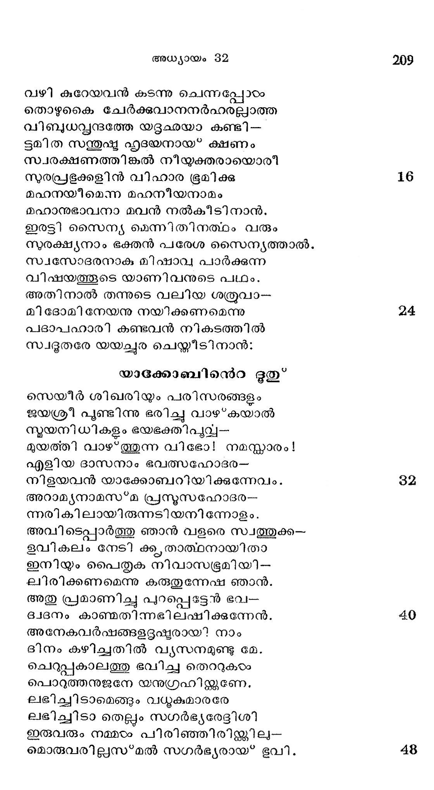
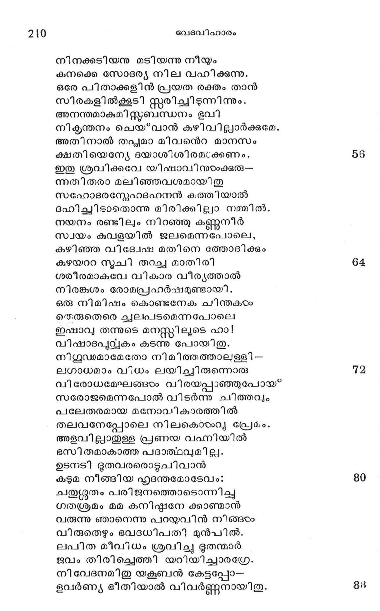
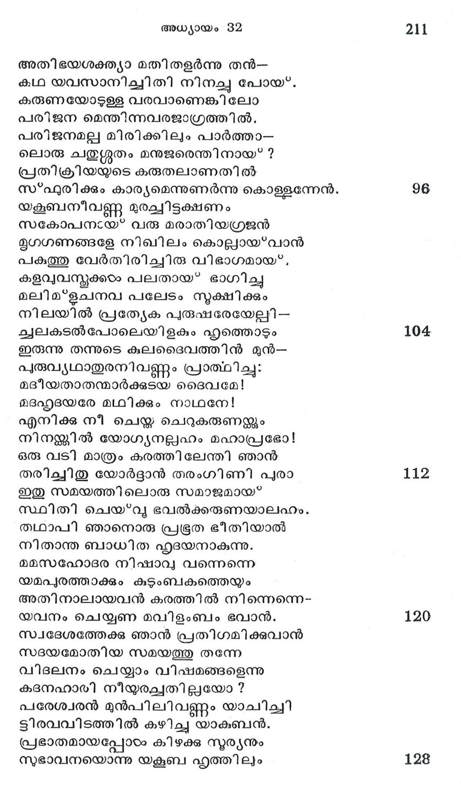
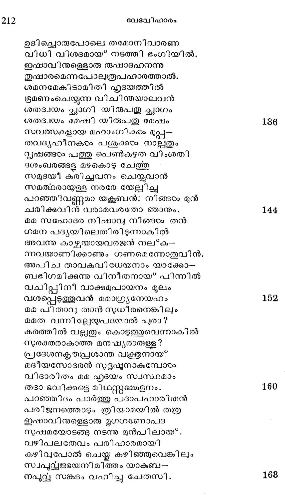
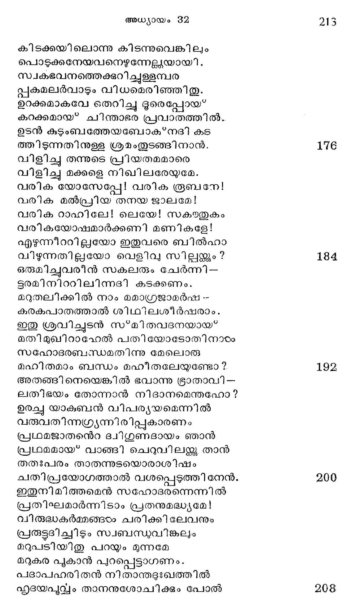
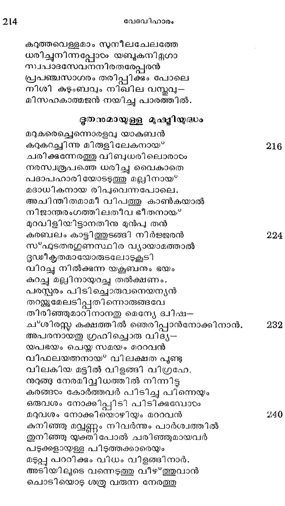
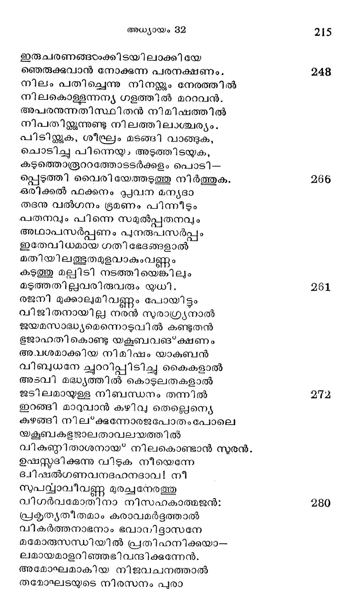
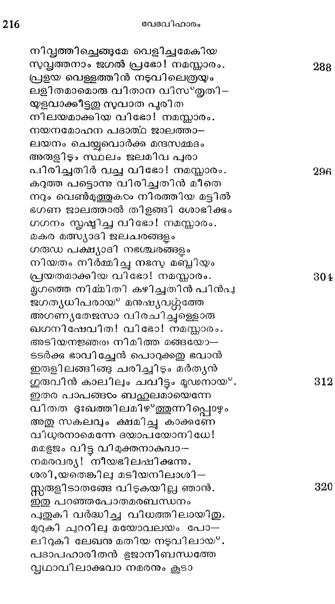
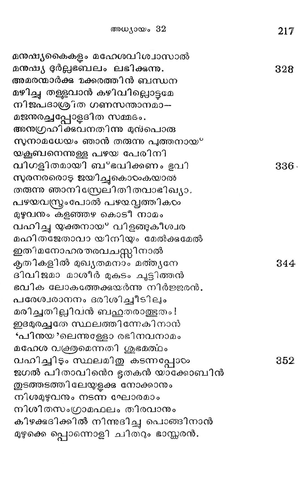

യാക്കോബ്” ഗിലയാദ*പര്വ്വതം വിടുന്നതു"
വൃത്തം -- അന്നനട
അനന്തരം യാക്കോബവിടെ നിന്നു ത--
ന്നനന്തമായൊരു മൃഗഗണത്തെയും
ഭൂതകര് ഭൂതൃകളിവരെയും നിജ
വധുകുമാരരിന് സമവായത്തെയും
നിമിഷം കൂട്ടിക്കൊണ്ടതി ത്വരയൊടും
ഗമനം ചെയ്തതന് ജനപദം നോക്കി.
വിശദരഗ്മിയിന് സമൂഹത്താലിരുഠം
വിപാടനം ചെയ്യും വിധുവൊടു ചേര്ന്നു 8
വിയത്തില് നിന്നിടു മുഡുക്കം പോലവേ
ചബിളങ്ങിയായവന് സഹചര ഗണം.
വഴി കുറേയവന് കടന്നു ചെന്നുപ്പോഴം
തൊഴുകൈ ചേര്ക്കുവാനനര്ഹരല്വാത്ത
വിീബുധവൃന്ദത്തേ യദൃഛയാ കണ്ടി --
ട്മിത സയ്തുഷ്ട ഹൃദയനായ* ക്ഷണം
സ്വരക്ഷണത്തിങ്കല് നീയുക്തരായൊരീി
സുരപ്രഭൂക്കളിന് വിഹാര ഭൂമിക്കു
മഹനയീമെന്ന മഹനീയനാമം
മഹാനുഭാവനാ മവന് നല്കീടിനാന്.
ഇരട്ടി സൈന്യ മെന്നിതിനത്ഥം വരും
സുരക്ഷ്യനാം ഭക്തന് പരേശ സൈന്യത്താല്.
സ്വസോദരനാകു മിഷാവ പാര്ക്കുന്ന
വിഷയത്തൂടെ യാണിവനുടെ പഥം.
അതിനാല് തന്നുടെ വലിയ ശത്രുവാ--
മി ദോമി നേയനു നയിക്കണമെന്നു
പദാപഹാരി കണ്ടവന് നികടത്തില്
സ്വഭൂതരേ യയച്ചുര ചെയ്തീടി നാന്:
യാക്കോബിനന്െറ ഭൂതു*
സെയീര് ശിഖരിയും പരിസരങ്ങളും
ജയശ്രീ പൂണ്ടിന്നു ഭരിച്ചു വാഴ*കയാല്
സ്മയനിധികളം ഭയഭക്തിപൂവ--
മുയത്തി വാഴ*ത്തുന്ന വിഭോ! നമസ്കാരം!
എളിയ ദാസനാം ഭവത്സഹോദര-
നിളയവന് യാക്കോബറിയിക്കുന്നേവം.
അറാമ്ൃയനാമസ*മ പ്രനുസഹോദര-
ന൬രികിലായിരുന്നടിയനിന്നോളം.
അവിടെപ്പാര്ത്തു ഞാന് വളരെ സ്വത്തുക്ക-
ളവിീകലം നേടി ക്ക താത്ലനായിതാ
ഇനിയും പൈതൃക നിവാസഭൂമിയി-
ചിരിക്കണമെന്നു കരുതുന്നേഷ ഞാന്.
അതു പ്രമാണിച്ചു പുറപ്പെട്ടേന് ഭവ-
ദ്ദനം കാണ്മതിന്നഭിലഷിക്കുന്നേന്.
അനേകവര്ഷങ്ങളദ്ദഷ്ടരായ? നാം
ദിനം കഴിച്ചതില് വ്യസനമുണ്ടു മേ.
ചെറ്്പകാലത്തു ഭവിച്ച തെററുകരം
പൊറുത്തനുജനേ യനുഗ്രഹിന്ക്കണേ.
ലഭിച്ചിടാമെങ്ങും വധുകമാരരേ
ലഭിച്ചിടാ തെല്ലം സഗര്ഭ്യരേട്ടിശി
ഇരുവരും നമ്മടം പിരിഞ്ഞിരി്ക്കില-
മൊരുവരില്ലസ*മല് സഗര്ഭ്യരായ* ഭൂവി.

നിനക്കടിയനു മടിയന്നു നീയം
കനക്കെ സോദര്യ നില വഹിക്കുന്നു.
ഒരേ പിതാക്കളിന് പ്രയത രക്തം താന്
സിരകളില്ക്കൂടി സ്റ്റരിച്ചിടുന്നിന്നും.
അനന്തമാകുമി സ്തബന്ധനം ഭൂവി
നികൃടന്തനം ചെയ്വാന് കഴിവില്ലാര്ക്കുമേ.
അതിനാല് തപ്യമാ മിവനന്െറ മാനസം
ക്ഷതിയെന്യേ ഭയാശിശിരമ:ക്കണം.
ഇതു ശ്രവിക്കവേ യിഷാവിനുഠംക്കുരു--
ന്നതിതരാ മലിഞ്ഞവശമായിതു
സഹോദരന്റവേഹദഹനന് കത്തിയാല്
ദഭഹിച്ചിടാതൊന്നു മിരിക്കില്ലാ നമ്മില്.
നയനം രണ്ടിലും നിറഞ്ഞു കണ്ണുനീര്
സ്വയം കുവളയില് ജലമെന്നപോലെ,;
കഴിഞ്ഞ വിദ്വേഷ മതിനെ ത്തോദിക്കും
കുഴയററ സൂചി തറച്ച മാതിരി
ശരീരമാകവേ വികാര വീര്യത്താല്
നിരങ്ഭശം രോമപ്രഹര്ഷമുണ്ടായി.
ഒരു നിമിഷം കൊണ്ടനേക ചിന്തകയം
തെരുതെരെ ചുലപടമെന്നപോലെ
ഇഷാവ, തന്നുടെ മനസ്സിലൂടെ ഹാ!
വിഷാദപുവ്വകം കടന്നു പോയിതു.
നിഗൂഡമാമേതോ നിമിത്തത്താലളളി--
ലഗാധമാം വിധം ലയിച്ിരുന്നൊരു
വി രോധമേലേങ്ങഠം വിരയപ്പാഞ്ഞുപോയ്
സരോജമെന്നപോല് വിടര്ന്നു ചിത്തവും
പലേതരമായ മനോവി കാരത്തില്
തലവനേപ്പോലെ നിലകൊടംവു പ്രേമം.
അളവില്ലാതുള്ള പ്രണയ വഹ്നിയില്
ഭസി തമാകാത്ത പദാത്ഥവുമില്ല.
ഉടനടി ഭുതവരരൊടുചിവാന്
കടുമ നീങ്ങിയ ഹൃദന്തമോടേവം?:
ചതുശ്ശതം പരിജനത്തൊടൊന്നിച്ചു
ഗത്ശ്രമം മമ കനിഷ്ഠഷനേ ക്കാണ്മാന്
വരുന്നു ഞാനെന്നു പറയുവിന് നിങ്ങടം
വിരുതെഴും ഭവദധിപതി മുന്പില്.
ലപിത മീവിധം ശ്രവിച്ചു ദൂതന്മാര്
ജവം തിരിച്ചെത്തി യറിയിച്ചാരഗ്രേ.
നിവേദനമിതു യകൂബന് കേട്ടപ്പോ--
ളവര്ണ്യ ഭീതിയാല് വിവർണ്ണനായിതു.

അതിഭയശക്ത്യാ മതി തളര്ന്നു തന്--
കഥ യവസാനിച്ചിതി നിനച്ചു പോയ്.
കരുണയോടള്ള്ള വരവാണെങ്കിലോ
പരിജന മെന്തിന്നവരജാഗ്രത്തില്.
പരിജനമല്ല മിരിക്കിലും പാര്ത്താ--
ലൊരു ചതുശ്ശതം മനുജരെന്തിനായ ?
പ്രതിക്രിയയുടെ കരുതലാണതില്.
സ*ഫുരിക്കും കാര്യമെന്നുണര്ന്നു കൊള്ളന്നേന്.
യക്ബനീവണ്ണ മുരച്വിട്ടക്ഷണം
സകോപനായ് വരു മരാതിയഗ്രജന്
മൃഗഗണങ്ങളേ നിഖിലം കൊല്ലായ*വാന്
പകുത്തു വേര്തിരിച്ചിരു വിഭാഗമായ.
കളവുവസ്തുക്കം പലതായ* ഭാഗിച്ചു
മലിമ*ളചനവ പലേടം നുക്ഷിക്കും
നിലയില് പ്രത്യേക പുരുഷരേയേല്ചി--
ചലകടല്പോലെയിളകും ഹൃത്തൊടും
ഇരുന്നു തന്നുടെ കുലദൈവത്തിന് മുന്-
പുരുവൃഥാതുരനിവണ്ണം പ്രാത്ഥിച്ചു:
മദീയതാതന്മാര്ക്കുടയ ദൈവമേ!
മദഹൃദയരേ മഥിക്കും നാഥനേ!
എനിക്കു നീ ചെയ്ത ചെറുകരുണയ്ക്കും
നിനള്ന്ക്കില് യോഗ്യനല്ലഹം മഹാപ്രഭോ!
ഒരു വടി മാത്രം കരത്തിലേന്തി ഞാന്
തരിച്ചിതു യോര്ദ്ദാന് തരംഗിണി പുരാ
ഇതു സമയത്തിലൊരു സമാജമായ*
സ്ഥിതി ചെയ*”വു ഭവല്ക്കരുണയാലഹം.
തഥാപി ഞാനൊരു പ്രഭൂരത ഭീതിയാല്
നിതാന്ത ബാധിത ഹൃദയനാകുന്നു.
മമസഹോദര നിഷാവ വന്നെന്നെ
യമപ്രത്താക്കും കുടുംബകത്തെയും
അതിനാലായവന് കരത്തില് നിന്നെന്നെ
യവനം ചെയ്യണ മവിളംബം ഭവാന്.
സ്വദേശത്തേക്കു ഞാന് പ്രതിഗമിക്കുവാന്
സദയമോതിയ സമയത്തു തന്നേ
വിദലനം ചെയ്യാം വിഷമങ്ങളെന്നു
കദനഹാരി നീയ്രച്ചതില്ലയോ ?
പരേശ്വരന് മുന്പിലിവണ്ണം യാചിച്ി
ടിരവവിടത്തില് കഴിച്ച യാകബന്.
പ്രഭാതമായപ്പോടം കിഴക്ക സൂര്യനും
സുഭാവനയൊന്നു യകൂബ ഹൃത്തിലും

ഉദിച്ചൊരുപോലെ തമോനിവാരണ
വിധി വിശദമായ നടത്തി ഭംഗിയില്.
ഇഷാവിനുള്ളൊരു രുഷാദഹനന്നു
തുഷാരമെന്നപോലതരൂപഹാരത്താല്.
ശമനമേകിടാമിതി ഹൃദയത്തില്
ഭ്രമണംചെയ്യുന്ന വിചിന്തയാലവന്
ശതദ്വയം ച്ലാഗി യിരുപതൂ ച്ലാഗം
ശതദ്വയം മേഷി യിരുപതു മേഷം
സവത്സകളായ മഹാംഗികാംം മുപ്പ--
തവദൃഹീനകരം പശുക്കഠം നാല്പതും
നൃഷങ്ങഠം പത്തു പെണ്കഴുത വിംശതി
ഭശംഖരങ്ങള മഴകൊടു ചേത്തൂ
സമുദയീ കരിച്ചവനം ചെയ്യവാന്
സമത്ഥരായ്ള്ള നരരേ യേല്ലിച്ചു
പറഞ്ഞിവണ്ണമാ യകൂബന്: നിങ്ങഠം മുന്
ചരിക്കുവിന് വരാമവരതോ ഞാനും.
മമ സഹോദര നിഷാവ നിങ്ങടം തൻ
ഗമന പദ്ൃൃയയിലെതിരിടുന്നാകില്
അവന്നു കാഴ്ചയായവരജന് നല്ക്--
ന്നവയാണിക്കാണും ഗണമെന്നോതുവിന്.
അപിച താവകവിധേയനാം യാക്കോ-
ബഭിഗമിക്കുന്നു വിനീതനായ? പിന്നില്
വചിപ്പിനീ വാക്കുമുപായനം മൂലം
വശപ്പെടുത്തുവന് മമാഗ്രയനേയഹം
മമ പിതാവു താന് സുധീരനെങ്കിലും
മമത വന്നില്ലേയുപദയാല് പുരാ?
കരത്തില് വല്ലതും കൊടുത്തുവെന്നാകില്
സുരക്തരാകാത്ത മനുഷ്യരാരുള്ള ?
പ്രദേശനകൃതപ്രശാന്ത വര്തുനായ്
മദീയസോദരന് സുദൃഷ്ടനാകുമ്പോടം
വിദാരിതം മമ ഹൃദയം സ്വസ്ഥമാം
തദാ ഭവിക്കട്ടെ മിഥസ്റ്റമ്മേളനം.
പറഞ്ഞിദം പാര്ത്തു പദാപഹാരിതന്
പരിജനത്തൊടും ത്രിയാമയിൽ തത്ര
ഇഷാവിനുള്ളൊരു മൃുഗഗണോപദ
സുഷമയോടങ്ങു നടന്നു മുന്പിലായ'*.
വഴിപലതേവം പരിഹാരമായി
കഴിവുപോല് ചെയ്ത കഴിഞ്ഞുവെങ്കിലും
സ്വപുവ്വജഭയനിമിത്തം യാകബ--
നപുവ്വ സങ്കടം വഹിച്ചു ചേതസി.

കിടക്കയിലൊന്നു കിടന്നുവെങ്കിലം
പൊടുക്കനേയവനെഴുന്നേള്ലയയായി.
സ്വകഭവനത്തെക്കുറിച്ചുള്ളമ്പര
പ്പുകമലര്വാടും വിധമെരിഞ്ഞിതു.
ഉറക്കമാകവേ തെറിച്ചു ഭൂരെപ്പോയ്*
കറക്കമായ* ചിന്താഭര പ്രവാതത്തില്..
ഉടന് കുടുംബത്തേയബോക"നഭി കട
ത്തിടുന്നതിനുള്ള ശ്രമംതുടങ്ങിനാന്.
വിളിച്ചു തന്നുടെ പ്രിയതമമാരെ
വിളിച്ചു മക്കളെ നിഖിീലരേയുമേ.
വരിക യോസ്േപ്പേ! വരിക രൂബനേ!
വരിക മല്പ്രിയ തനയ ജാലമേ!
വരിക റാഹിലേ! ലെയേ! സകയനതുകം
വരികയോഷമാര്ക്കണി മണികളേ!
എഴുന്നീററില്യോ ഇതുവരെ ബില്ഹാ
വിഴുന്നതില്ലയോ വെളിവു സില്ലതകും ?
ഒരുമിച്ചവരീന് സകലരും ചേര്ന്നി--
ട്രമിനിററിലിന്നദി കടക്കണം.
മറുതലിക്കില് നാം മമാഗ്രജാമര്ഷ' --
കരകപാതത്താല് ശിഥിലശീര്ഷരാം.
ഇതു ശ്രവിച്ചുടന് സ്മിതവദനയായ്*
മതിമുഖിറാഹേല് പതിയോടോതിനാടം
സഹോദരബന്ധമതിന്നു മേലൊരു
മഹിതമാം ബന്ധം മഹീതലേയണ്ടോ?.
അതങ്ങിനെയെങ്കില് ഭവാന്നു ഭ്രാതാവി -
ലതിഭയം തോന്നാന് നിദാനമെന്തഹോ?
ഉരച്ച യാകബന് വിപര്യയമെന്നില്
വരുവതിന്നഗ്രൃയന്നിരിപ്പുകാരണം
പ്രഥമജാതനന്െറ ദ്വിഗുണദായം ഞാന്
പ്രഥമമായ* വാങ്ങി ചെറുവിലന്ക്കു താന്
തതഃപരം താതന്നുടയൊരാശിഷം
ചതിപ്രയോഗത്താല് വശപ്പെടുത്തിനേന്.
ഇതുനിമിത്തമെന് സഹോദരന്നെന്നില്
പ്രതിഘമാര്ന്നിടാം പ്രതനുമദ്ധ്യമേ!
വിരുദ്ധകര്മ്മങ്ങഠം ചരിക്കി ലേവനും
പ്രരുട്ടദിച്ചിടം സവബന്ധുവിങ്കലും
മറുപടിയിതു പറയും മുന്നമേ
മറുകര പുകാന് പുറപ്പെട്ടാഗണം.
പദാപഹരിതന് നിതാന്തദുഃഖത്തില്
ഹൃദയപുവയ്വം താനനുശോചിക്കും പോൽ

കറുത്തവെള്ളമാം നുനീലചേലത്തേ
ധരിച്ചുനിന്നപ്പോരം യബുകനിമൃഗാ
സ്വപാദസേവനനിരതരേപ്പരന്
പ്രപഞ്ചസാഗരം തരിപ്പിക്കം പോലെ
നിശി കുടുംബവും നിഖില വസ്തവ-
മീസഹകാത്മജന് നയിച്ചു പാരത്തില്.
ഭൂതനുമായുള്ള മുഷ്മിയുഭ്ധം
മറുകരെച്ചെന്നൊരളവു യാകബന്
കറുകറച്ചിന്നു മീരുളി ലേകനായ*
ചരിക്കുന്നേരത്തു വിബുധരിലൊരാടം
നരസ്വരൂപത്തെ ധരിച്ചു വൈകാതെ
പദാപഹാരി യോടഴത്തു മലിനായ"
മദാധികനായ രിപുവെന്നപോലെ.
അചിന്തിതമാമീ വിപത്തു കാണ്കയാല്
നിജാന്തരംഗത്തിലതീവ ഭീതനായ*
മുറവിളിയിട്ടാനതിനു മുന്പ്യ തന്
കരബലം കാട്ടിത്തുടങ്ങി നിര്ജ്ജുരന്
സ*ഫുടതരഗുണസ്ഥിര വ്യായാമത്താല്
ദുഡീകൃതമായോരുടലോടുകൂടി
വിറച്ചു നില്ക്കുന്ന യക്ബനും ഭയം
കുറച്ചു മല്ലിനായ്യറച്ച തല്ക്ഷണം.
പരസ്പരം പിടിച്ചൊരുവനെയന്യന്
തറയന്ക്കുമേലടിപ്പതിന്നൊരുങ്ങവേ
തിരിഞ്ഞുമാറിനാനതു മെന്യേ ദ്വിഷ--
ച*ശിരസ്സു കക്ഷത്തില് ഞെരിപ്പാന്നോക്കിനാന്.
അപരനായതു ഗ്രഹിച്ചൊരു വിദ്യ--
യപഭയം ചെയ്ത് സമയം മററവന്
വിഫലയത്നനായ* വിലക്ഷത പൂണ്ടു
വിലകിയ മ്ടില് വിളങ്ങി വിഗ്രറഹേ.
നുറുങ്ങു നേരമിവ്വിധത്തില് നിന്നിട്ടു
കരങ്ങടം കോര്ത്തവര് പിടിച്ച പിന്നെയും
ഒരുവശം നോക്കിപ്പിടി പിടിക്കുമ്പോടം
മറുവശം നോക്കിയൊഴിയും മററവന്
കുനിഞ്ഞു മവ്വണ്ണം നിവര്ന്നും പാര്ശ്വത്തില്
തുനിഞ്ഞു യക്തിപോല് ചരിഞ്ഞുമായവര്
പടുക്കളായളള പിടുത്തക്കാരെയും
മടുപ്പു പററിക്കും വിധം വിളങ്ങിനാര്.
അടിയിലൂടെ വന്നെടുത്തു വീഴത്തുവാന്
ചൊടിയൊടു ശത്രു വരുന്ന നേരത്തു

ഇരുചരണങ്ങരഠംക്കിടയിലാക്കിയേ
ഞെരുക്കുവാന് നോക്കുന്ന പരനക്ഷണം.,
നിലം പതിലച്ചെന്നു നിനയ്ക്കും നേരത്തില്
നിലകൊള്ളന്നന്യ ഗളത്തില് മററവന്.
അപരനുന്നതിസ്ഥിതന് നിമിഷത്തില്
നിപതിജ്കകുന്നുണ്ടു നിലത്തിലാശ്ചര്യം.
പിടിയ്ക്കുക, ശീഘ്രം മടങ്ങി വാങ്ങുക,
ചൊടിച്ചു പിന്നെയും അടുത്തിടയുക,
കടുത്തൊരുററത്തോടടര്ക്കളം പൊടി --
പ്പെടത്തി വൈരിയേത്തടുത്തു നിര്ത്തുക.
ഒരിക്കല് ഫക്കനം പ്ലവന മന്യദാ
തദനു വല്ഗനം ഭ്രമണം പിന്നീടും
കചതനവും പിന്നെ സമുല്പ്പതനവും
അഥാപസര്പ്പണം പുനരുപസര്പ്പം
ഇതേവിധമായ ഗതിഭേടങ്ങളാല്
മതിയിലത്ഭുതമുളവാകുംവണ്ണം
കടുത്തു മലിടി നടത്തിയെങ്കിലും
മടുത്തതില്ലവരിരുവരും യധി.
രജനി മുക്കാലുമിവണ്ണം പോയിട്ടും
വിജിതനായില്ല നരന് സുരാഗ്ര്യനാല്
ജയമസാദ്ധ്യമെന്നൊടുവില് കണ്ടുതന്
ഭജാഹതികൊണ്ടു യക്ലബവങ*ക്ഷണം
അപശമാക്കിയ നിമിഷം യാകുബന്
വിബുധനേ ചുററിപ്പിടിച്ചു കൈകളാല്
അടവി മദ്ധ്യത്തില് കൊടുലതകളാൽ
ജടിലമായള്ള നിബന്ധനം തന്നില്
ഇറങ്ങി മാറുവാന് കഴിവു തെല്ലെന്യെ
കുഴങ്ങി നില്ക്കുന്നോരജപോതം പോലെ
യകൂബകളജാലതാവലായത്തില്
വിക്ണ്ഠബിതാശനായ* നിലകൊണ്ടാന് നുരന്.
ഉഷ്സ്തടിക്കുന്നു വിടുക നീയെന്നേ
ദ്വിഷല്ഗണവനദഹനദാവ! നീ
സുപല്യാവീവണ്ണ മുരച്ചനേരത്തു
വിഗര്വമോതിനാ നിസഹകാത്മജന്?:
പ്രകൃത്ൃയതീതമാം കരാവമര്ദ്ദത്താല്
വികര്ത്തനാഭനാം ഭവാനിദാസനേ
മമോരുസന്ധിയില് പ്രതിഹനിക്കയാ-
ലമായമാളറിഞ്ഞഭിവന്ടദിക്കുന്നേന്.
അമോഘമാകിയ നിജവചനത്താല്
തമോഘടയുടെ നിരസനം പുരാ

നിയ്വയത്തിച്ചെങ്ങുമേ വെളിച്ചമേകിയ
സുത്കയത്തനാം ജഗല് പ്രഭോ! നമസ്കാരം.
പ്രളയ വെള്ളത്തിന് നടുവിലെത്രയും
ലളിതമാമൊരു വിതാന വിസ്തൃതി -
യളവാക്കിീട്ടതു സുവാത പുരിത
നിലയമാക്കിയ വിഭോ! നമസ്കാരം.
നയനമോഹന പദാത്വഥാ ജാലത്താ-
ലയനം ചെയ്യുവൊര്ക്ക മന്ദസമ്മദം
അരുളിടും സ്ഥലം ജലമിവ പരാ
പിരിച്ചതിര് വച്ച വിഭോ! നമസ്കാരം.
കറുത്ത പട്ടൊന്നു വിരിച്ചതിന് മീതെ
നറും വെൺമുത്തുകരം നിരത്തിയ മട്ടിൽ
ഭഗണ ജാലത്താല് തിളങ്ങി ശോഭിക്കും
ഗഗനം സൃഷ്ടിച്ച വിഭോ! നമസ്കാരം.
മകര മത്സ്യാദി ജലചരങ്ങളം
ഗരുഡ പക്ഷ്യാദി നഭശ്ചരങ്ങളം
നിയതം നിര്മ്മിച്ചു നഭസ മബ്ബിയ്യം
പ്രയതമാക്കിയ വിഭോ! നമസ്കാരം.
ളുഗത്തെ നിമ്മിതി കഴിച്ചതിന് പിന്പു
ജഗത്യധിപരായ് മനുഷ്്യവറ്്ൃത്തേ
അഗണ്യതേജസാ വിരചിച്ചുള്ളൊരു
ഖഗനിഷേവിത! വിഭോ! നമസ്കാരം.
അടിയനജ്ഞത നിമിത്ത മങ്ങയോ--
ടടര്ക്കു ഭാവി ച്ചേന് പൊറുക്കതു ഭവാന്
ഇരുളിലങ്ങിങ്ങു ചരിച്ചിടും മര്ത്ൃന്
ഗുരുവിന് കാലിലും ചവിട്ടം മുഡനായ്.
ഇതര പാപങ്ങടം ബഹുലമായെന്നേ
വിതത ഭുഃഖത്തിലമിഴ*ത്തുന്നിപ്പൊഴും
അതു സകലവും ക്ഷമിച്ച കാക്കണേ
വിധുരനാമെന്നേ ദയാപയോനി ധേ!
മമഭജം വിട്ട വിമുക്തനാകുവാ--
നമരവര്യ! നീയഭിലഷിക്കുന്നു.
ശരി,യതെങ്കില മടിയനിലാശി--
സ്ലരുളിടാതങ്ങേ വിടുകയില്ല ഞാന്.
ഇതു പറഞ്ഞപോതമരബന്ധനം
പുതരുകി വര്ദ്ധിച്ച വിധത്തിലായിതു.
മുറുകി ചുററില മയോവലയം പോ-
ലിറുകി ലേഖനു മതിയ നടുവിലായ്.
പദാപഹാരിതന് ഭജാനിബന്ധത്തേ
വൃഥാവിലാക്കുവാ നമരനും കൂടാ

മനുഷ്യകൈകളും മഹേശവിശ്വാസാല്
മനുഷ്യ ഭുര്ല്പഭബലം ലഭിക്കുന്നു.
അമരന്മാർക്കു തക്കരത്തിന് ബന്ധന
മഴിച്ചു തള്ളവാന് കഴിവില്ലൊട്ടമേ
നിജപദാശ്ര്'ത ഗണസന്താനമാ--
മജനുരച്ചപ്പോളദിത സമ്മദം.
അനുഗ്രഹിക്കുവനതിന്നു മുന്പൊരു
സുനാമധേയം ഞാന് തരുന്നു പുത്തനായ
യകൂബനെന്നുള്ള പഴയ പേരിനി
വിഗളിതമായി ബ*ഭവിക്കണം ഭവി
സുരനരരൊടു ജയിച്ചുകൊടംകയാല്
തരുന്നു ഞാനി സ്രേലിതി തവാഭിഖ്യാ.
പഴയവന്റ്രംപോല് പഴയ. സ്കപത്തികടം
മുഴുവനും കളഞ്ഞഴ കൊട് നാമം
വഹിച്ചു യുക്തനായ* വിളങ്ങുകീശചര
മഹി തജേതാവാ യിനിയുംം മേല്ക്കുമേല്
ഇതിമനോഹരതരവചസ്ത്സിനാല്
കൃതികളില് മുഖ്യതമനാം മത്ത്യനേ
ദിവിജമാ മാശീര് മുകുടം ചൂട്ടിത്തന്
ഭവിക ലോകത്തേക്കയര്ന്നു നിര്ജ്ജരന്.
പരേശ്വരാനനം ദരിശിച്ചീടിലും
മരിച്ചതില്ിവന് ബഹ്വതരാത്ഭുതം!
ഇടദമുരച്ചതേ സ്ഥലത്തിന്നേകി നാനു
*പിനുയ?ലെന്നുള്ളോ രഭിനവനാമം
മഹേശ വ്രക്രമെന്നതി ശുഭമത്ഥം
വഫഹിച്ചിടും സ്ഥലമിതു കടന്നപ്പോരം
ജഗല് പിതാവിനന്െറ ഭൂതകന് യാക്കോബിൻ
തുടത്തടത്തിലേയ്ളക്കു നോക്കാനും
നിശമുഴുവനും നടന്ന ഘോരമാം
നിശിതസംഗ്രാമഫലം തിരവാനും
കിഴക്കദിക്കില് നിന്നുദിച്ചു പൊങ്ങിനാന്
മുഴുക്കെ പ്പൊന്നൊളി ചിതറും ഭാസ്കരന്.
